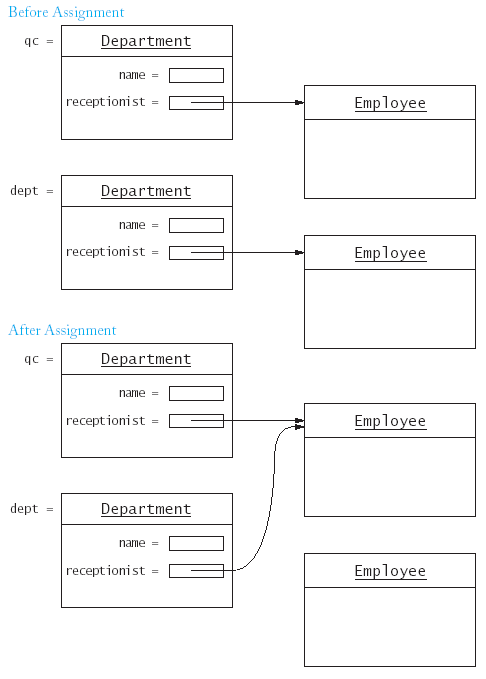

int operator-(Time a, Time b)
{ return a.seconds_from(b);
}
Time now;
Time morning(9, 0, 0);
long seconds_elapsed = now - morning;
long seconds_elapsed = operator-(now, morning);
|
Syntax 17.1 : Overloading Operator Definition return_type operatoroperator_symbol(parameters)
|
some_return_type operator+(Time a, Time b);
Time operator+(Time a, int sec)
{ Time r = a;
r.add_seconds(sec);
return r;
}
Time now;
Time later = now + 60; /* 60 seconds later */
bool operator==(Time a, Time b)
{ return a.seconds_from(b) == 0;
}
bool operator!=(Time a, Time b)
{ return a.seconds_from(b) != 0;
}
bool operator<(Time a, Time b)
{ return a.seconds_from(b) < 0;
}
ostream& operator<<(ostream& out, Time a)
{ out << a.get_hours() << ":";
if (a.get_minutes() < 10) out << "0";
out << a.get_minutes() << ":";
if (a.get_seconds() < 10) out << "0";
out << a.get_seconds();
return out;
}
really meanscout << now << "\n";
that is(cout << now) << "\n";
operator<<(cout, now) << "\n";
istream& operator>>(istream& in, Time& a)
{ int hours;
int minutes;
int seconds;
in >> hours >> minutes >> seconds;
a = Time(hours, minutes, seconds);
return in;
}
++x;
x++;
int i = 0;
int j = 0;
vector<double> s(2);
s[0]=10;
s[1]=20;
double a = s[i++]; /* a is s[0], i is 1 */
double b = s[++j]; /* b is s[1], j is 1 */
void operator++(Time& a) /* prefix operator */
{ a.add_seconds(1);
}
void operator++(Time& a, int dummy) /* postfix operator */
{ a.add_seconds(1);
}
bool operator==(Time a, Time b); /* a == b means operator==(a,b) */
bool Time::operator==(Time b) const /* a == b means a.operator==(b) */
{ return seconds_from(b) == 0;
}
bool Time::operator!=(Time b) const
{ return !(*this == b); /* calls operator== */
}
Time Time::operator++() /* prefix operator */
{ *this = *this + 1; /* calls operator+ */
return *this;
}
Time Time::operator++(int dummy) /* postfix operator */
{ Time t = *this;
*this = *this + 1; /* calls operator+ */
return t;
}
class Department {
...
private:
string name;
Employee* receptionist;
};
Department::Department(string n, Employee e)
{ name = n;
receptionist = new Employee(e.get_name(), e.get_salary());
}
/* second constructor */
Department::Department(string n)
{ name = n;
receptionist = NULL;
}
Department::~Department()
{ delete receptionist;
}
|
Syntax 17.2 : Destructor Definition Class_name::~Class_name()
|
{ Department dept;
...
} // dept.~Department() automatically invoked here
...
Department* p = new Department(...);
...
delete p; // p->~Department() automatically invoked here
Department qc("Qualitiy Control", Employee("Tester, Tina", 50000));
Department dept("Shipping", Employee("Hacker, Harry", 35000));
dept = qc;

Department& Department::operator=(const Department& b)
{ if (this != &b)
{ name = b.name;
delete receptionist;
if (b.receptionist == NULL)
receptionist == NULL;
else
receptionist = new Employee(b.receptionist->get_name(),
b.receptionist->get_salary());
}
return *this;
}
z = y = x;
Department dept = qc; /* is not the assignment operator! */
Department dept(qc);
Department::Department(const Department& b)
{ name = b.name;
if (b.receptionist == NULL)
receptionist = NULL;
else
receptionist = new Employee(b.receptionist->get_name(),
b.receptionist->get_salary());
}